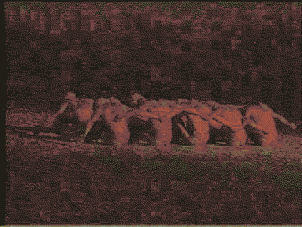
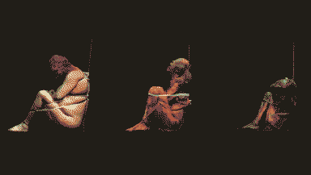
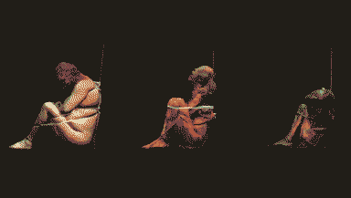

going hollow is great actually.
- an idealized person or thing.
- a spectre or phantom.
an eidolon is a post-ghost. spirits clinging to any shell that’ll house it for a time: puppets, mannequins, plastic idols, sex dolls, robots, dental ghosts, electronic waste.
These aren’t suitable bodies for a human spirit, though, and any shell gradually petrifies, which can leave them stuck.
Maybe not everything that is othered is an eidolon, like Scrimshaw, the Cyclopticon, and all the little hermetic intelligences.
There’s a post-life-cycle they’re caught in, which starts to become clear as a cycle as all the dusty offal they’re animating starts to converge on the same material, to look like another branch of the Monolith.
  

eidolon trees: starving eidola wander out into the desert, seeking each other, following their innate human desire to be a part of something. Monolith exploits this and urges them to wrap together into mock-monoliths.
eidolon flowers: budding, new forms of life for CARRION: jawbones in stellate, hypnotising formations; vertebrate stems, tooth-digit seeds of despair.